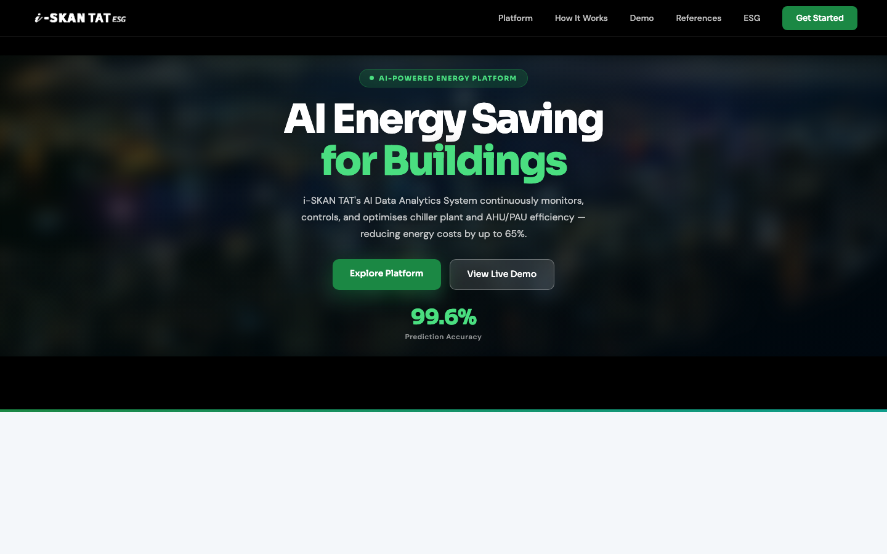
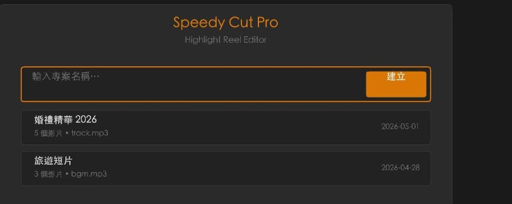
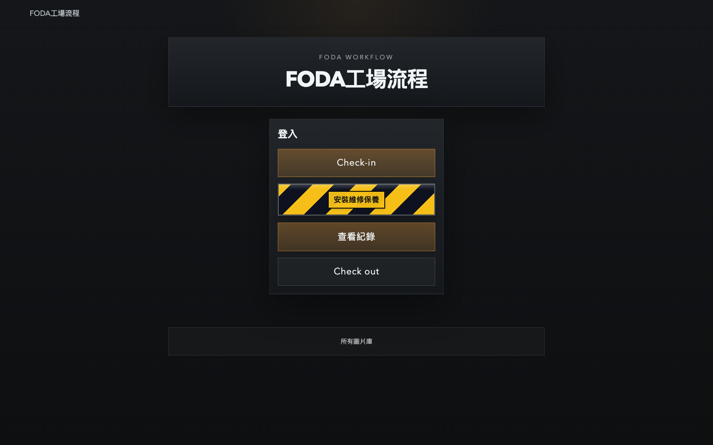

Selected AI projects created and delivered by TAT Living.

i-SKAN TAT — AI Energy Saving for Buildings
An AI-powered building management platform that continuously monitors chiller plants and HVAC equipment, then optimises operation to cut energy use by up to 65%. Combines real-time BMS data, an AI prediction engine, and a human-in-the-loop control workflow.
View project website

Speedy Cut Pro — Intelligent Highlight Reel Editor
A macOS desktop application (Final Year Project, BSc Computing) that combines on-device automated editing — librosa beat detection, Laplacian-variance quality analysis, intelligent clip sampling — with cloud AI image-to-video generation (Kling, Seedance). Exports to H.264, ProRes, and FCPXML 1.11 for Final Cut Pro X.
View research report

FODA Photo — Automated Marketing Workflow for Garages
A bilingual workflow web app for automotive service facilities. Captures vehicle check-in / repair / check-out documentation, organises a centralised service photo library, and automatically turns those service photos into marketing-ready visuals — closing the loop from workshop floor to customer communications.
View project website

AI Image Processing Platform
Co-developed with Shenzhen Backup Tech and Media Management Limited to showcase practical AI image processing workflows.
View project website

Infant Digital Records and Health Analytics
A digital platform for infant daily records, growth tracking, and health analytics insights.
View project website